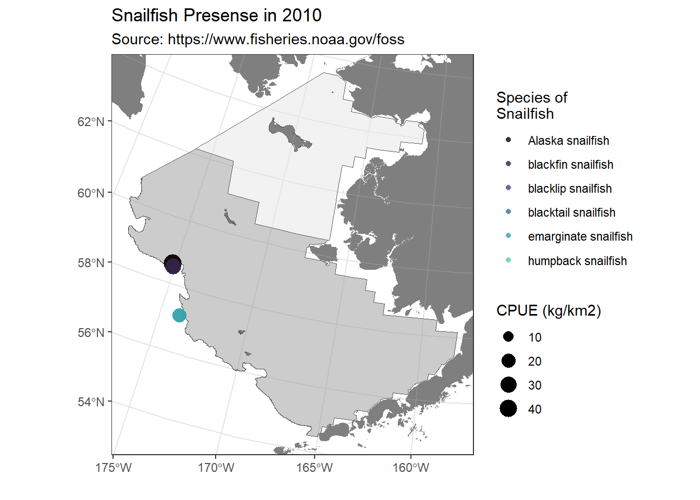

Snailfish found in the Eastern Bering Sea in 2010
DRAFT: September 26, 2023
This report compares the distribution and relative abundance of 6 snailfish species (specifically, blacktail snailfish, Alaska snailfish, emarginate snailfish, humpback snailfish, blackfin snailfish, blacklip snailfish; Figure 1) with maps from the 2010 in the eastern Bering sea shelf bottom trawl survey. Survey results reported herein include estimates of catch-per-unit-effort for most snailfishes and geographic distributions (Figure 2); Markowitz, Dawson, Charriere, Prohaska, Rohan, Stevenson, et al. (2022b); Markowitz, Dawson, Charriere, Prohaska, Rohan, Haehn, et al. (2022); Markowitz, Dawson, Charriere, Prohaska, Rohan, Stevenson, et al. (2022a)). In 2010, snail fish were caught at 3 stations. Data is publicly available from the Fisheries One Stop Shop (NOAA Fisheries Alaska Fisheries Science Center, 2023).

Methods
Quarto has support for some fancy accessories that are helpful for reports. For example, you can create flowcharts using tools like {mermaid}.
flowchart LR
A[Survey data] --> B(Processed data products)
B --> C{R code and Markdown}
C --> D[Presentations]
C --> E[Data process reports]
Works Cited
Markowitz, E. H., Dawson, E. J., Charriere, N. E., Prohaska, B. K., Rohan, S. K., Haehn, R. A., Stevenson, D. E., and Britt, L. L. (2022). Results of the 2018 eastern Bering Sea continental shelf bottom trawl survey of groundfish and invertebrate fauna (NOAA Tech. Memo. NMFS-AFSC-450; p. 183). U.S. Dep. Commer. https://doi.org/10.25923/m4pw-t510
Markowitz, E. H., Dawson, E. J., Charriere, N. E., Prohaska, B. K., Rohan, S. K., Stevenson, D. E., and Britt, L. L. (2022a). Results of the 2019 eastern and northern Bering Sea continental shelf bottom trawl survey of groundfish and invertebrate fauna (NOAA Tech. Memo. NMFS-AFSC-451; p. 225). U.S. Dep. Commer. https://doi.org/10.25923/d641-xb21
Markowitz, E. H., Dawson, E. J., Charriere, N. E., Prohaska, B. K., Rohan, S. K., Stevenson, D. E., and Britt, L. L. (2022b). Results of the 2021 eastern and northern Bering Sea continental shelf bottom trawl survey of groundfish and invertebrate fauna (NOAA Tech. Memo. NMFS-AFSC-452; p. 227). U.S. Dep. Commer. https://doi.org/10.25923/g1ny-y360
NOAA Fisheries Alaska Fisheries Science Center. (2023). Fisheries one stop shop public data: RACE division bottom trawl survey data query. https://www.fisheries.noaa.gov/foss; U.S. Dep. Commer.